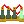
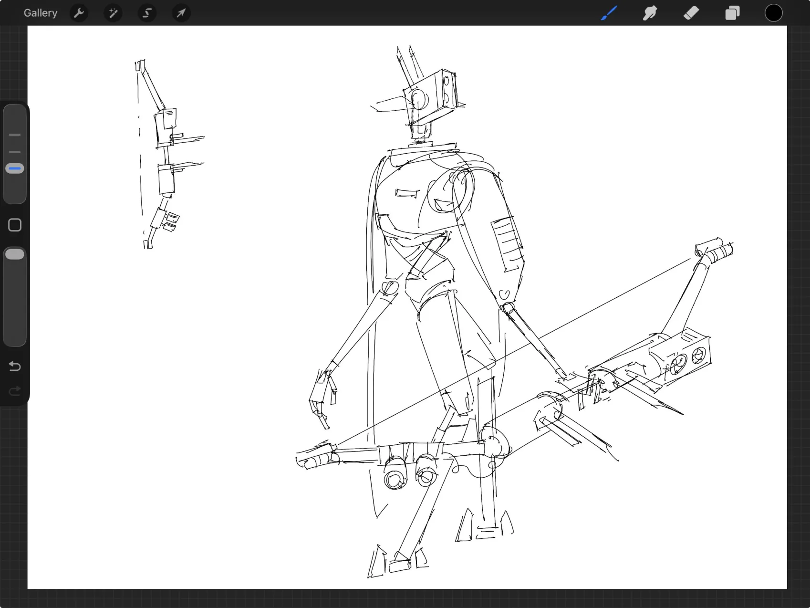
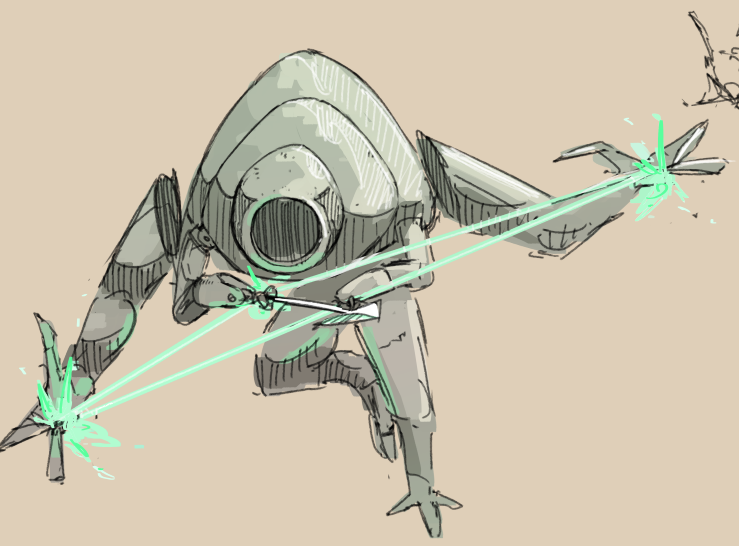
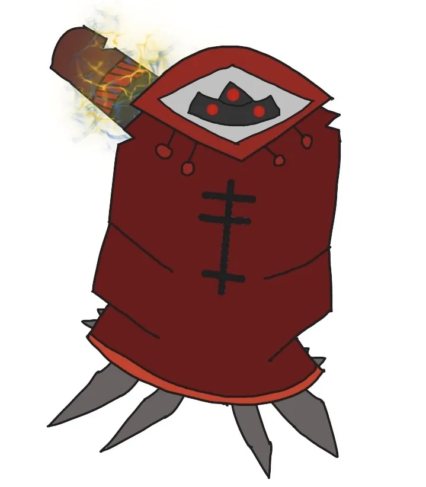

Thistle
Hey kids, you like big giant lasers?
Primary-Fire: Tur-Bow Laser. Charge up a plasma laser with three charge levels. A quarter-second charge deals low damage to a single target, a half-second charge can pierce one enemy and inflicts moderate damage, and fully charged shots deal heavy damage, pierce infinitely, and leave a trail of explosions in their wake for any bots who may survive the initial beam.
Secondary-Fire: Stun Bomb. Throw out a stunning grenade that launches you into Bullet Time, slowing down everyone except for you, and allowing you to fire time-delayed laser blasts that are unleashed once Bullet Time ends.
SPECIAL: Jaunty Skip :3. Holding the movement keys while releasing a Tur-Bow Laser shot causes you to take a jaunty skip in the direction you're holding.
Overview:
Nothing I can say on the matter of the Thistle or its three-megawatt laser cannon will quite match RAM developer Andrew Cunningham's own words on the matter. As he puts it so elegantly:
Lasers, railguns, tau cannons… medieval crossbows inexplicably imbued with the piercing ability of a solar neutrino by the power of ignorance and childhood wonder… ... Piercing beams appeal to something limbic and primal within me. They represent a trump card, or axiom- a reality-defying promise that however much concrete or steel a setting dares to put in the weapon’s path, it will only serve to generate a bigger splash of light and magma when the omnipotent projectile inevitably punches through the other side. They negate human notions of hardness and momentum, dumping their energy indiscriminately through a vector of space, searing wounds with the stoicism of geometric functions, reminding us that the material world, in the limit, is composed only of liquids with varying viscosities. To be clear, they make absolutely no physical sense. And so they are joyous.
Although admittedly quite loquacious, Andrew summarizes the elegance and beauty of the Thistle's design. There really is nothing in the world quite like a giant fuckoff laser beam.
Best Upgrades:
-
Shallow Focus Z - Replaces the piercing capabilities of fully-charged shots with a massive delayed-action explosion triggered against the first enemy hit.
-
Raytracing Z - Fully charged shots bounce between multiple enemies automatically and damage each. Notably, this ricochet occurs even if you have Shallow Focus Z alongside it. Death lasers are fun, but what about ricocheting, explosive death lasers?
-

Slobberknocker Protocol - Adds a fourth charge level to the bow. AND THIS... IS TO GO... EVEN FURTHER BEYOND!!!
Trivia:
- In some depictions, Thistle's heads resemble theleodites, a distance measuring instrument used for surveying land. Below is some excellent art by Enneh_07 of a Thistle and its goofy theleodite head.
- Also provided below is a piece of concept art for an earlier iteration of the Thistle, with a radically different design. This art is actually by the concept artist for all of the bots, Gecko.
- Thistles were implimented into RAM's final level, Kudzu Patch 33, in order to create more dynamic and challenging enemy encounters without strictly increasing enemy density. Based off of how many times these annoying snipers have killed me from offscreen, I'd say that they succeeded.
- Canonically, Thistle bows are simply children's toys heavily modified into lethal weapons of annihilation through careful tinkering and overclocking. Some may claim this is unrealistic, but given the stuff that we let kids in the real world have as toys, I'm not surprised that plasma laser bows were something given for Christmas in the year 2071.
- Never bring a plasma gun to a plasma sword fight, but never bring a plasma sword to a plasma laser fight.
Images


Epitaph
Regular ball sports too pedestrian? Try Pin-Base-Depleted-Uranium-Ball!
Universal Serial Bat - Press to hold out the Serial Bat, release to swing it in a 90 degree arc in the direction of the mouse relative to the bat. Although hard to control, the Universal Serial Bat deals high melee damage, stuns enemies, and moves you forward in a short dash in the direction of the swing.
Secondary-Fire: Percussive Criticality Orb. Summon an explosive energy sphere in front of you that can be launched with the Universal Serial Bat.
SPECIAL: Dead Bot's Volley. Impacting enemies with Percussive Criticality Orb causes the orb to rebound back at you. Succesfully hitting it again with the Universal Serial Bat increases its damage and explosive radius, stacking 2 times until the orb becomes Supercritical and explodes for a final time, dealing maximum damage.
Overview:
Of all of the RAM bots, the Epitaph was one that underwent the most changes and reimagining during development. There's a reason its devlog is titled "A Batter Out of (Development) Hell", after all. But after much trial and tribulation, the Epitaph we have today is one of the most unique and enjoyable RAM bots, even though I'm admittedly not that good at them. Playing Epitaph is a truly unique combination of baseball, volleyball, and even a little bit of pinball at times. Even if their career started out somewhat rough, they're definitely a heavy hitter in the big leagues now.
Best Upgrades:
-
Subcriticality - Supercritical orbs can now be rebounded INDEFINITELY, dealing their massive damage over and over as long as the volley can be maintained. The chain reaction only stops when there aren't foes left to pulverize.
-
Pitching Arm - Throw orbs directly at enemies, rather than serving them up into the air. Makes Epitaph a lot easier and intutive to play, while still letting you skillfully rebound orbs
-
Frame Interpolation - Increases the time that orbs hover in the air when ready to rebound.
Trivia:
- YOU WILL BE ASSIMILATED INTO THE COLLECTIVE. WE WILL HARVEST YOUR FLESH AND MIND AND USE IT TO BUILD OUR WORLD. DO NOT RESIST.
- Epitaphs harvest the motherboards of their slain foes to contribute to a shared hivemind, where they mummify themselves in digital union even as their physical bodies decay into rust. The memories they steal are used to supply their afterlife with a constant stream of novelty. Pretty heavy metal, huh?
- Epitaphs refer to themselves in the first person plural, identifing themselves as merely one element of a greater whole.
- Percussive Crticality Orbs have in-built aim assist. Despite this, I still can't aim them to save my life.
- Below is art of an Epitaph OC made by a member of the RAM Discord. Pretty badass, huh?
Images
